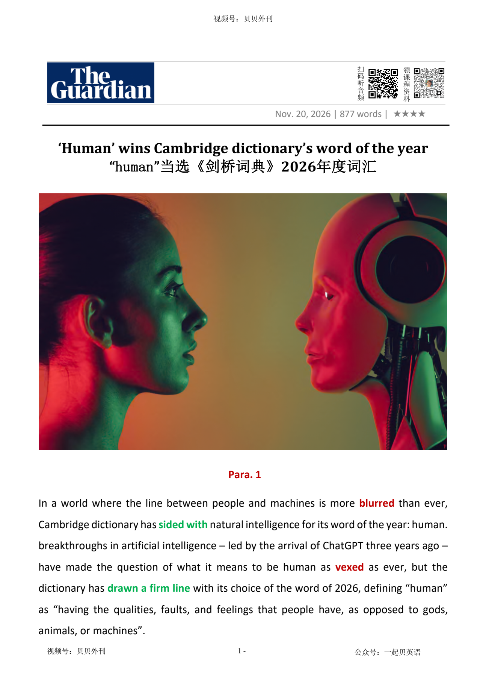

02 HEADLINE / 标题中英文解释
‘Human’ wins Cambridge dictionary’s word of the year
“human”当选《剑桥词典》2026年度词汇

‘Human’ wins Cambridge dictionary’s word of the year
“human”当选《剑桥词典》2026年度词汇
文章围绕《剑桥词典》把human评为2026年度词汇展开。
在人工智能与人类边界越来越模糊的背景下，词典用“拥有人的品质、缺点和情感”明确区分人、神、动物和机器，也回应了计算机能否获得意识的争论。
词典编辑指出，人工智能改变了人们谈论“何以为人”的方式。
human-made等复合词越来越常见，因为人们需要标明作品和劳动出自人类而不是机器。
不断追问“我们是谁”，本身也被文章视为人类共有的特质。
其他候选词同样反映时代变化，包括能够自主行动的AI agent、代表非数字生活的analogue，以及有益身心的wholesome。
文章还介绍mogging、looksmaxxing和aura farming等网络流行语，说明技术与社交媒体正在迅速创造新的表达。
作者并不只强调焦虑。
虽然人们担心工作被取代、人工智能毁灭文明，现实生活仍以体育、宗教和身体经验证明自己的力量。
教皇Leo十四世在通谕中强调，人工智能没有身体、喜悦、痛苦、友谊和责任体验。
结尾借英伟达丑闻说明人工智能很难复制人类特有的荒唐与戏剧性。
人会因为欲望、冲动和糟糕判断而犯错，而这些缺点也可能正是“人性”的一部分。
human成为年度词汇，因此既是一种防御，也是一场关于人类身份的重新讨论。
Cambridge Dictionary chose 'human' as its word of the year for 2026. AI is making the line between people and machines less clear.
The dictionary defines human as having the qualities, faults and feelings of people, unlike gods, animals or machines. Scientists still disagree about whether computers can become conscious.
The word human is now used more often to separate people's work from AI work. New expressions such as 'human-made' show this change.
The article says that humans have asked who they are for thousands of years. The answer changes, but asking the question is something people share.
Other words on the list also reflect modern life. An AI 'agent' can work without human control. 'Analogue' activities happen away from digital technology, while 'wholesome' things improve life.
Internet words such as 'mogging', 'looksmaxxing' and 'aura farming' show how social media creates new language. Many people fear that AI will take their jobs or even destroy civilisation.
However, real physical life also had many successes this year. Pope Leo XIV wrote that AI has no body and cannot truly feel joy, pain, love, friendship or responsibility.
The article ends with a humorous point. AI can solve difficult maths problems, but it cannot easily copy the strange social mistakes humans make.
The Nvidia scandal shows how desire and poor judgement can create real drama. Our weaknesses may be part of what makes us human.
剑桥词典年度词：human（Para 1-4） ├─ 词条选定：human 当选2026年度词，界定人与机器之别 ├─ 观念分歧：学者争论AI能否拥有人性意识 └─ 时代动因：AI普及倒逼人们重新思考人的本质 年度词汇榜单（Para 5-6） ├─ 候选词：agent、analogues、wholesome ├─ 柯林斯年度词：mogging └─ 网络新词：looksmaxxing、aura farming 现实与AI的对照反思（Para 7-9） ├─ 语言的意义：用词汇锚定人的边界 ├─ 普遍焦虑：岗位危机、AI毁灭文明的警示 └─ 人文佐证：教皇通谕强调AI没有肉身与真实体验 人性瑕疵的反讽（Para 10-11） ├─ AI能力：攻克高难度学术难题 └─ 人性注脚：英伟达丑闻，人的欲望、失判正是人性本身
In a world where the line between people and machines is more blurred变得模糊不清 than ever, Cambridge dictionary has sided with natural intelligence for its word of the year: human. breakthroughs in artificial intelligence – led by the arrival of ChatGPT three years ago – have made the question of what it means to be human as vexed棘手的 as ever, but the dictionary has drawn a firm line with its choice of the word of 2026, defining “human” as “having the qualities, faults, and feelings that people have, as opposed to gods, animals, or machines”.
在人类与机器之间的界限日益模糊的今天，《剑桥词典》将其年度词汇的桂冠颁给了自然智能——“人类”（human）。人工智能领域的一系列突破，尤其是三年前ChatGPT的问世，让“人究竟何以为人”这一问题再次变得棘手。而在评选2026年度词汇时，《剑桥词典》却划定了一条清晰的边界：它指的是“具有人的品质、缺点和情感，有别于神、动物或机器”。
AI advances have spurred鞭策 questions about whether computers can achieve consciousness清醒状态, with the evolutionary进化的 biologist Richard Dawkins among those who answered in the affirmative肯定, saying he was “left with the overwhelming巨大的 feeling that they are human”. Sceptics怀疑者, on the other hand, argue that there is a vast difference between how a human brain evolves进化 and how an AI system is built.
人工智能的飞速发展引起了大家的疑问：计算机是否也能拥有意识？包括进化生物学家理查德·道金斯在内的一些人对此给出了肯定的回答。道金斯表示，自己“强烈地感受到它们就是人类”。而持怀疑态度的人则认为，人脑的演化方式与人工智能系统的构建过程之间，还是存在着天壤之别。
Cambridge dictionary said the meaning and use of “human” had become more important in the age of the chatbot. Colin McIntosh, an editor of the dictionary, said AI was “changing the way we talk about being human” and had led to the word of the year being deployed部署 to distinguish辨别 our work from that of advanced computer systems.
《剑桥词典》表示，在聊天机器人时代，“human”一词的含义及其使用方式变得愈发重要。该词典编辑科林·麦金托什说，人工智能正在“改变着我们谈论身为人类的方式”，也使得人们越来越多地借助这个词，将人类的工作与先进计算机系统的成果区分开来。
“Fears about what humans may lose when we outsource交外办理 our thinking has made us reconsider the extent to which we rely on AI: from top mathematicians数学家 to teachers of young children,” he said. “A recent increase in compounds复合物 such as ‘human-made’ highlight how the word has come to distinguish works or qualities of people, as distinct from AI.” AI brings us back to questions that we’ve asked for millennia数千年: who are we, what does it mean to be human? The answer to these questions has never been fixed固定的 or stable, but the act of asking it is something we have in common. 《
他说：“当我们把思考的工作外包出去时，人类究竟会失去什么？这种担忧促使我们重新审视自己对人工智能的依赖程度。从顶尖数学家到幼儿教师，都在思考这个问题。近期，诸如‘human-made（人类制造的）’这样的复合词明显增多，这也凸显出‘human’一词正被用来标明某种作品或品质出自人类，而非人工智能。”人工智能又一次将我们带回那些延续了数千年的追问：我们是谁？何以为人？这些问题的答案从来不是一成不变的，但不断提出这些问题，本身就是我们人类共同拥有的特质。
Other tech-related words were on the shortlist入围名单: “agent人工智能代理”, the term for an AI system that can operate – sometimes alarmingly – without human control, and “analogues非数字化活动”, relating to non-digital activities. A non-tech contender竞争者 was “wholesome有益健康的”, a word to describe something which is likely to improve your life either physically, morally, or emotionally.
入围年度词汇候选名单的还有其他几个与科技相关的词汇。其中一个是“agent”，即能够在没有人类控制的情况下自主运行的人工智能系统，有时其自主程度甚至令人不安。另一个是“analogues”，指与数字技术相对的非数字化活动。还有一个与科技无关的候选词：“wholesome”，用来形容那些可能在身体、道德或情感层面让生活变得更美好的事物。
Earlier this month, “mogging碾压” – meaning to outperform胜过 or outshine胜过 someone or something – was named the Collins word of the year. Tech-adjacent与科技行业相关的 words also stood out among the new additions to the Cambridge dictionary. “Looksmaxxing最大化外貌吸引力”, describing the act of making oneself as physically attractive as possible, which has been associated with the online manosphere男性网络圈, and “aura farming刻意营造个人魅力”, another term often encountered相遇 on social media, which refers to “the activity of doing things with the intention of showing a personality that people admire and think is attractive and interesting”.
本月早些时候，意为“胜过或盖过某人或某物”的网络俚语“mogging”被评为《柯林斯词典》年度词汇。科技相关的新词也成为《剑桥词典》新增词条中的一大亮点。“looksmaxxing”指通过各种方式让自己在外形上尽可能具有吸引力，这个词与网络男性圈（manosphere）文化联系密切；另一个词是“aura farming”，同样常见于社交媒体，指“有意识地通过某些行为展现一种令人欣赏、觉得有魅力且有趣的个性”。
That we seem to require such explicit清楚明白的 assertion明确肯定 is another indication of how quickly our sci-fi realities have accelerated. Maybe language is the best resistance反对 we have; maybe if we say “human” often enough the bots will not own us.
我们竟然需要如此明确地重申，这本身就足以说明，科幻般的现实正以多么惊人的速度向我们逼近。或许，语言是我们所能采取的最好抵抗；或许，只要我们足够频繁地说出“人类”这个词，机器人就无法将我们取而代之。
People might have made some of those searches while procrastinating拖延 at work and wondering whether their jobs would exist in eight or 10 months. Or perhaps they were conducted组织 in the middle of sleepless nights haunted出没 by warnings from the creators of A.I., who themselves were predicting that no matter how useful a role their products could play in disease eradication根除 and finding cheap flights at Thanksgiving, they might also eventually flatten变平 civilization文明.
人们或许是在工作时拖延正事，顺手进行了其中一些搜索，同时忧心忡忡地思量着：再过八个月或十个月，自己的工作岗位是否还会存在。也可能是在一个个辗转难眠的深夜里，人们被人工智能创造者发出的警告所困扰。这些创造者自己也曾预言：无论他们的产品未来能在消灭疾病、帮助人们在感恩节期间找到廉价机票等方面发挥多大作用，最终都可能将整个文明夷为平地。
We can take that all in and still acknowledge that real life, in all of its physicality身体特性, had victories to claim over the past year. The Winter Olympics. The World Cup. In the spring, Pope教皇 Leo XIV issued his first encyclical通谕, “Magnifica Humanitas.” Its subject was the dangers of artificial intelligence, and he denounced谴责 its powers as “entirely tied to data processing.” He cautioned警告 that “so-called artificial intelligences do not undergo经历 experiences, do not possess a body, do not feel joy or pain, do not mature成熟 through relationships and do not know from within从内部 what love, work, friendship or responsibility mean.” The word “human” appears in the document more than 370 times.
我们当然可以将这些忧虑一并纳入考量，但与此同时，也不妨承认：在过去这一年里，真实生活凭借其鲜活的肉身，同样赢得了一场又一场胜利。冬季奥运会、世界杯。春天，教皇Leo十四世发布了他的首篇通谕《壮丽的人性》（Magnifica Humanitas），将人工智能的危险作为主题，并谴责人工智能的能力“完全局限于数据处理”。他警告说：“所谓的人工智能不会经历生活，不拥有身体，不会感受喜悦或痛苦，不会在关系中逐渐成熟，也无法从内心真正理解爱、工作、友谊或责任意味着什么。”在这份通谕中，“human”一词出现了370多次。
Even if A.I. has been shown to simulate模拟 and improve certain aspects of human accomplishment, it has, at the same time, demonstrated little capacity to reproduce the distinctly human forms of social folly愚蠢 that unite us in a spirit of incredulous怀疑的 delight. This year, the world learned that A.I. can solve mathematical problems that have perplexed迷惑 academics for years. Then came the Nvidia scandal, in all its human mess and interpersonal人际的 drama.
即便人工智能已经展现出模拟并提升人类某些成就的能力，与此同时，它在复制人类独有的社会性荒唐行为方面，却几乎毫无建树。而恰恰是这些荒唐行径，将我们联结在一起，让我们忍不住为之发笑。今年，世界见证了人工智能解决那些困扰数学界多年的问题。然而，紧接着发生的英伟达丑闻，却又将人类世界的人情纠葛与人际戏剧，呈现在世人面前。
An A.I. rendition演绎 of a tech executive might have been even better at manufacturing microchips, but what would a leader like that have done if confronted面临 with the charms of a businesswoman whom U.S. intelligence identified as a spy? Would this A.I. boss have fallen for the ruse诡计 and succumbed屈服? Or cuffed给……戴上手铐 her and called the authorities at the first signs of seduction诱惑力, thus depriving剥夺 the world of a scandal that seems tee-ed up as material for “Succession继任 2”? The irony has been irresistible不可遏止的. A ruler of Silicon Valley, Jensen Huang was nevertheless brought down as if he were Thyestes提厄斯忒斯 or Gary Hart. Human judgment is often bad or even terrible judgment — people make mistakes out of出于 desire, compulsion强迫, distress. Maybe that is what makes us human most of all.
假如一位科技高管由人工智能生成，他或许能把芯片制造这件事做得更加出色。可如果他遇上一位魅力非凡的女商人，而美国情报部门早已认定此人是一名间谍，这样一位人工智能掌舵者又会作何反应？他会不会也落入对方设下的圈套，最终拜倒在她的魅力之下？还是会在察觉到一丝诱惑的苗头时，便立刻将她铐起来并报警，从而让世人错失一场堪称为《继承之战》第二季量身打造的惊天丑闻？这其中的讽刺意味，实在令人无法抗拒。作为硅谷的掌舵者，黄仁勋最终却以一种近乎古希腊悲剧人物提厄斯忒斯，或美国政坛人物加里·哈特的方式跌落神坛。人类的判断力往往拙劣甚至荒唐——人会因为欲望、冲动和内心的煎熬而犯错。也许，恰恰是这些弱点，才最能定义我们何以为人。
（指问题等）棘手的，伤脑筋的
a problem that is difficult to deal with
The conference spent days discussing the vexed question of border controls. 会议花了几天的时间讨论边境关卡这个难题。
breakthroughs in artificial intelligence – led by the arrival of ChatGPT three years ago – have made the question of what it means to be human as vexed as ever, but the dictionary has drawn a firm line with its choice of the word of 2026, defining “human” as “…
在人类与机器之间的界限日益模糊的今天，《剑桥词典》将其年度词汇的桂冠颁给了自然智能——“人类”（human）。人工智能领域的一系列突破，尤其是三年前ChatGPT的问世，让“人究竟何以为人”这一问题再次变得棘手。而在评选2026年度词汇时，《剑桥词典》却划定了一条清晰的边界：它指的是“具有人的品质、缺点和情感，有别于神、动物或机器”。
鞭策；刺激；鼓舞
to encourage sb to do sth or to encourage them to try harder to achieve sth
Her difficult childhood spurred her on to succeed.她艰辛的童年激励她取得成功。
AI advances have spurred questions about whether computers can achieve consciousness, with the evolutionary biologist Richard Dawkins among those who answered in the affirmative, saying he was “left with the overwhelming feeling that they are human”.
人工智能的飞速发展引起了大家的疑问：计算机是否也能拥有意识？包括进化生物学家理查德·道金斯在内的一些人对此给出了肯定的回答。道金斯表示，自己“强烈地感受到它们就是人类”。而持怀疑态度的人则认为，人脑的演化方式与人工智能系统的构建过程之间，还是存在着天壤之别。
清醒状态；知觉
1. the state of being able to use your senses and mental powers to understand what is happening
I can't remember any more—I must have lost consciousness. 我想不起来了—我当时一定是失去了知觉。 2. the state of being aware of sth觉察；感觉；意识
AI advances have spurred questions about whether computers can achieve consciousness, with the evolutionary biologist Richard Dawkins among those who answered in the affirmative, saying he was “left with the overwhelming feeling that they are human”.
人工智能的飞速发展引起了大家的疑问：计算机是否也能拥有意识？包括进化生物学家理查德·道金斯在内的一些人对此给出了肯定的回答。道金斯表示，自己“强烈地感受到它们就是人类”。而持怀疑态度的人则认为，人脑的演化方式与人工智能系统的构建过程之间，还是存在着天壤之别。
进化的；演变的；逐渐发展的
connected with evolution ; connected with gradual development and change
evolutionary theory进化论
AI advances have spurred questions about whether computers can achieve consciousness, with the evolutionary biologist Richard Dawkins among those who answered in the affirmative, saying he was “left with the overwhelming feeling that they are human”.
人工智能的飞速发展引起了大家的疑问：计算机是否也能拥有意识？包括进化生物学家理查德·道金斯在内的一些人对此给出了肯定的回答。道金斯表示，自己“强烈地感受到它们就是人类”。而持怀疑态度的人则认为，人脑的演化方式与人工智能系统的构建过程之间，还是存在着天壤之别。
肯定；同意
a word or statement that means ‘yes’; an agreement or a confirmation
She answered in the affirmative (= said ‘yes’) .她作出了肯定的答复。
AI advances have spurred questions about whether computers can achieve consciousness, with the evolutionary biologist Richard Dawkins among those who answered in the affirmative, saying he was “left with the overwhelming feeling that they are human”.
人工智能的飞速发展引起了大家的疑问：计算机是否也能拥有意识？包括进化生物学家理查德·道金斯在内的一些人对此给出了肯定的回答。道金斯表示，自己“强烈地感受到它们就是人类”。而持怀疑态度的人则认为，人脑的演化方式与人工智能系统的构建过程之间，还是存在着天壤之别。
巨大的；压倒性的；无法抗拒的
very great or very strong; so powerful that you cannot resist it or decide how to react
The evidence against him was overwhelming.对他不利的证据确凿，无法抵赖。
AI advances have spurred questions about whether computers can achieve consciousness, with the evolutionary biologist Richard Dawkins among those who answered in the affirmative, saying he was “left with the overwhelming feeling that they are human”.
人工智能的飞速发展引起了大家的疑问：计算机是否也能拥有意识？包括进化生物学家理查德·道金斯在内的一些人对此给出了肯定的回答。道金斯表示，自己“强烈地感受到它们就是人类”。而持怀疑态度的人则认为，人脑的演化方式与人工智能系统的构建过程之间，还是存在着天壤之别。
怀疑者；持怀疑态度的人
a person who doubts that a claim, statement or idea is true or that sth will happen
Sceptics argue that the new technology is not as revolutionary as its supporters claim. 持怀疑态度的人认为，这项新技术并不像支持者所声称的那样具有革命性。
Sceptics, on the other hand, argue that there is a vast difference between how a human brain evolves and how an AI system is built.
人工智能的飞速发展引起了大家的疑问：计算机是否也能拥有意识？包括进化生物学家理查德·道金斯在内的一些人对此给出了肯定的回答。道金斯表示，自己“强烈地感受到它们就是人类”。而持怀疑态度的人则认为，人脑的演化方式与人工智能系统的构建过程之间，还是存在着天壤之别。
进化；进化形成
to develop over time, often many generations, into forms that are better adapted to survive changes in their environment
The three species evolved from a single ancestor. 这三种生物从同一祖先进化而来。
Sceptics, on the other hand, argue that there is a vast difference between how a human brain evolves and how an AI system is built.
人工智能的飞速发展引起了大家的疑问：计算机是否也能拥有意识？包括进化生物学家理查德·道金斯在内的一些人对此给出了肯定的回答。道金斯表示，自己“强烈地感受到它们就是人类”。而持怀疑态度的人则认为，人脑的演化方式与人工智能系统的构建过程之间，还是存在着天壤之别。
部署，调度 （军队或武器）
1. to move soldiers or weapons into a position where they are ready for military action
2 000 troops were deployed in the area.那个地区部署了2 000人的部队。 2. to use sth effectively有效地利用；调动
Colin McIntosh, an editor of the dictionary, said AI was “changing the way we talk about being human” and had led to the word of the year being deployed to distinguish our work from that of advanced computer systems.
《剑桥词典》表示，在聊天机器人时代，“human”一词的含义及其使用方式变得愈发重要。该词典编辑科林·麦金托什说，人工智能正在“改变着我们谈论身为人类的方式”，也使得人们越来越多地借助这个词，将人类的工作与先进计算机系统的成果区分开来。
辨别; 区分
If you can distinguish one thing from another or distinguish between two things, you can see or understand how they are different.
Could he distinguish right from wrong? 他能辨别是非吗？
Colin McIntosh, an editor of the dictionary, said AI was “changing the way we talk about being human” and had led to the word of the year being deployed to distinguish our work from that of advanced computer systems.
《剑桥词典》表示，在聊天机器人时代，“human”一词的含义及其使用方式变得愈发重要。该词典编辑科林·麦金托什说，人工智能正在“改变着我们谈论身为人类的方式”，也使得人们越来越多地借助这个词，将人类的工作与先进计算机系统的成果区分开来。
交外办理；外包
to arrange for sb outside a company to do work or provide goods for that company
We outsource all our computing work.我们把全部计算机技术工作包给外边去做。
“Fears about what humans may lose when we outsource our thinking has made us reconsider the extent to which we rely on AI: from top mathematicians to teachers of young children,” he said.
他说：“当我们把思考的工作外包出去时，人类究竟会失去什么？这种担忧促使我们重新审视自己对人工智能的依赖程度。从顶尖数学家到幼儿教师，都在思考这个问题。近期，诸如‘human-made（人类制造的）’这样的复合词明显增多，这也凸显出‘human’一词正被用来标明某种作品或品质出自人类，而非人工智能。”人工智能又一次将我们带回那些延续了数千年的追问：我们是谁？何以为人？这些问题的答案从来不是一成不变的，但不断提出这些问题，本身就是我们人类共…
数学家
A mathematician is a person who is trained in the study of numbers and calculations.
The risks can be so complex that banks hire mathematicians to assess them. 这类风险可以是如此复杂以至于银行雇佣数学家们去评估它们。
“Fears about what humans may lose when we outsource our thinking has made us reconsider the extent to which we rely on AI: from top mathematicians to teachers of young children,” he said.
他说：“当我们把思考的工作外包出去时，人类究竟会失去什么？这种担忧促使我们重新审视自己对人工智能的依赖程度。从顶尖数学家到幼儿教师，都在思考这个问题。近期，诸如‘human-made（人类制造的）’这样的复合词明显增多，这也凸显出‘human’一词正被用来标明某种作品或品质出自人类，而非人工智能。”人工智能又一次将我们带回那些延续了数千年的追问：我们是谁？何以为人？这些问题的答案从来不是一成不变的，但不断提出这些问题，本身就是我们人类共…
复合物；混合物 2. a noun, an adjective or a verb made of two or more words or parts of words, written as one or more words, or joined by a hyphen. Travel agent , dark-haired and bathroom
1. a thing consisting of two or more separate things combined together
“A recent increase in compounds such as ‘human-made’ highlight how the word has come to distinguish works or qualities of people, as distinct from AI.”
他说：“当我们把思考的工作外包出去时，人类究竟会失去什么？这种担忧促使我们重新审视自己对人工智能的依赖程度。从顶尖数学家到幼儿教师，都在思考这个问题。近期，诸如‘human-made（人类制造的）’这样的复合词明显增多，这也凸显出‘human’一词正被用来标明某种作品或品质出自人类，而非人工智能。”人工智能又一次将我们带回那些延续了数千年的追问：我们是谁？何以为人？这些问题的答案从来不是一成不变的，但不断提出这些问题，本身就是我们人类共…
数千年；几个千年（millennium 的复数形式）
the plural of millennium; periods of 1,000 years
Human civilization has evolved over millennia. 人类文明历经数千年不断演变。
AI brings us back to questions that we’ve asked for millennia: who are we, what does it mean to be human?
他说：“当我们把思考的工作外包出去时，人类究竟会失去什么？这种担忧促使我们重新审视自己对人工智能的依赖程度。从顶尖数学家到幼儿教师，都在思考这个问题。近期，诸如‘human-made（人类制造的）’这样的复合词明显增多，这也凸显出‘human’一词正被用来标明某种作品或品质出自人类，而非人工智能。”人工智能又一次将我们带回那些延续了数千年的追问：我们是谁？何以为人？这些问题的答案从来不是一成不变的，但不断提出这些问题，本身就是我们人类共…
固定的
You use fixed to describe something which stays the same and does not or cannot vary.
They issue a fixed number of shares that trade publicly. 他们发行了固定数量可公开交易的股票。
The answer to these questions has never been fixed or stable, but the act of asking it is something we have in common.
他说：“当我们把思考的工作外包出去时，人类究竟会失去什么？这种担忧促使我们重新审视自己对人工智能的依赖程度。从顶尖数学家到幼儿教师，都在思考这个问题。近期，诸如‘human-made（人类制造的）’这样的复合词明显增多，这也凸显出‘human’一词正被用来标明某种作品或品质出自人类，而非人工智能。”人工智能又一次将我们带回那些延续了数千年的追问：我们是谁？何以为人？这些问题的答案从来不是一成不变的，但不断提出这些问题，本身就是我们人类共…
入围名单
a small number of candidates for a job, etc., who have been chosen from all the people who applied
to draw up a shortlist拟就入围名单
Other tech-related words were on the shortlist: “agent”, the term for an AI system that can operate – sometimes alarmingly – without human control, and “analogues”, relating to non-digital activities.
入围年度词汇候选名单的还有其他几个与科技相关的词汇。其中一个是“agent”，即能够在没有人类控制的情况下自主运行的人工智能系统，有时其自主程度甚至令人不安。另一个是“analogues”，指与数字技术相对的非数字化活动。还有一个与科技无关的候选词：“wholesome”，用来形容那些可能在身体、道德或情感层面让生活变得更美好的事物。
人工智能代理；智能体；能够自主执行任务的人工智能系统
a computer program or system that can perform tasks independently or semi-independently on behalf of a user, often using artificial intelligence
AI agents can carry out complex tasks with minimal human intervention. 人工智能代理能够在极少人工干预的情况下执行复杂任务。
Other tech-related words were on the shortlist: “agent”, the term for an AI system that can operate – sometimes alarmingly – without human control, and “analogues”, relating to non-digital activities.
入围年度词汇候选名单的还有其他几个与科技相关的词汇。其中一个是“agent”，即能够在没有人类控制的情况下自主运行的人工智能系统，有时其自主程度甚至令人不安。另一个是“analogues”，指与数字技术相对的非数字化活动。还有一个与科技无关的候选词：“wholesome”，用来形容那些可能在身体、道德或情感层面让生活变得更美好的事物。
使人惊恐的；令人惊慌的；引起恐慌的
causing worry and fear
an alarming increase in crime犯罪活动骇人的增加
非数字化活动；与数字技术相对的事物
a non-digital activity or thing contrasted with digital technology
Reading a paper book is an analogue activity. 阅读纸质书是一种非数字活动。
Other tech-related words were on the shortlist: “agent”, the term for an AI system that can operate – sometimes alarmingly – without human control, and “analogues”, relating to non-digital activities.
入围年度词汇候选名单的还有其他几个与科技相关的词汇。其中一个是“agent”，即能够在没有人类控制的情况下自主运行的人工智能系统，有时其自主程度甚至令人不安。另一个是“analogues”，指与数字技术相对的非数字化活动。还有一个与科技无关的候选词：“wholesome”，用来形容那些可能在身体、道德或情感层面让生活变得更美好的事物。
竞争者；角逐者；争夺者
a person who takes part in a competition or tries to win sth
a contender for a gold medal in the Olympics奥运金牌的争夺者
A non-tech contender was “wholesome”, a word to describe something which is likely to improve your life either physically, morally, or emotionally.
入围年度词汇候选名单的还有其他几个与科技相关的词汇。其中一个是“agent”，即能够在没有人类控制的情况下自主运行的人工智能系统，有时其自主程度甚至令人不安。另一个是“analogues”，指与数字技术相对的非数字化活动。还有一个与科技无关的候选词：“wholesome”，用来形容那些可能在身体、道德或情感层面让生活变得更美好的事物。
有益健康的
1. good for your health
fresh, wholesome food有益健康的新鲜食品 2. morally good; having a good moral influence有道德的；有良好道德影响的
A non-tech contender was “wholesome”, a word to describe something which is likely to improve your life either physically, morally, or emotionally.
入围年度词汇候选名单的还有其他几个与科技相关的词汇。其中一个是“agent”，即能够在没有人类控制的情况下自主运行的人工智能系统，有时其自主程度甚至令人不安。另一个是“analogues”，指与数字技术相对的非数字化活动。还有一个与科技无关的候选词：“wholesome”，用来形容那些可能在身体、道德或情感层面让生活变得更美好的事物。
（外貌、气质或能力上的）碾压；比别人明显更出众；使相形见绌
the act of appearing significantly more attractive, impressive or superior than someone else, making them seem inferior by comparison
His confidence and good looks had him mogging everyone else in the room. 他的自信和出众外表让在场的其他人都相形见绌。
Earlier this month, “mogging” – meaning to outperform or outshine someone or something – was named the Collins word of the year.
本月早些时候，意为“胜过或盖过某人或某物”的网络俚语“mogging”被评为《柯林斯词典》年度词汇。科技相关的新词也成为《剑桥词典》新增词条中的一大亮点。“looksmaxxing”指通过各种方式让自己在外形上尽可能具有吸引力，这个词与网络男性圈（manosphere）文化联系密切；另一个词是“aura farming”，同样常见于社交媒体，指“有意识地通过某些行为展现一种令人欣赏、觉得有魅力且有趣的个性”。
胜过
If one thing outperforms another, the first is more successful or efficient than the second.
In recent years the Austrian economy has outperformed most other industrial economies. 近年来奥地利的经济已经超过了其他大多数的工业经济。
Earlier this month, “mogging” – meaning to outperform or outshine someone or something – was named the Collins word of the year.
本月早些时候，意为“胜过或盖过某人或某物”的网络俚语“mogging”被评为《柯林斯词典》年度词汇。科技相关的新词也成为《剑桥词典》新增词条中的一大亮点。“looksmaxxing”指通过各种方式让自己在外形上尽可能具有吸引力，这个词与网络男性圈（manosphere）文化联系密切；另一个词是“aura farming”，同样常见于社交媒体，指“有意识地通过某些行为展现一种令人欣赏、觉得有魅力且有趣的个性”。
胜过；优于；使……相形见绌；比……更出色
to be more successful, impressive or noticeable than sb/sth else; to be better than sb/sth
Her performance outshone that of all the other candidates. 她的表现胜过了所有其他候选人。
Earlier this month, “mogging” – meaning to outperform or outshine someone or something – was named the Collins word of the year.
本月早些时候，意为“胜过或盖过某人或某物”的网络俚语“mogging”被评为《柯林斯词典》年度词汇。科技相关的新词也成为《剑桥词典》新增词条中的一大亮点。“looksmaxxing”指通过各种方式让自己在外形上尽可能具有吸引力，这个词与网络男性圈（manosphere）文化联系密切；另一个词是“aura farming”，同样常见于社交媒体，指“有意识地通过某些行为展现一种令人欣赏、觉得有魅力且有趣的个性”。
与科技行业相关的；科技周边的；与科技领域相邻的
related to or closely connected with the technology industry, but not directly involved in developing or producing technology
The company is expanding into tech-adjacent industries such as digital healthcare and online education. 这家公司正向数字医疗和在线教育等科技相关行业拓展。
Tech-adjacent words also stood out among the new additions to the Cambridge dictionary.
本月早些时候，意为“胜过或盖过某人或某物”的网络俚语“mogging”被评为《柯林斯词典》年度词汇。科技相关的新词也成为《剑桥词典》新增词条中的一大亮点。“looksmaxxing”指通过各种方式让自己在外形上尽可能具有吸引力，这个词与网络男性圈（manosphere）文化联系密切；另一个词是“aura farming”，同样常见于社交媒体，指“有意识地通过某些行为展现一种令人欣赏、觉得有魅力且有趣的个性”。
突出；显眼；脱颖而出；引人注目
to be very noticeable or different from others because of being better, more important or more unusual
Her exceptional talent made her stand out from the other candidates.
最大化外貌吸引力；通过改善外表提升颜值（如护肤、 健身、穿搭或医美等）
the practice of trying to maximize one's physical attractiveness through changes to appearance, grooming, fitness or cosmetic procedures
Looksmaxxing has become increasingly popular among young men on social media. 在社交媒体上， 越来越多的年轻男性开始追求通过各种方式最大化自己的外貌吸引力。
“Looksmaxxing”, describing the act of making oneself as physically attractive as possible, which has been associated with the online manosphere, and “aura farming”, another term often encountered on social media, which refers to “the activity of doing things w…
本月早些时候，意为“胜过或盖过某人或某物”的网络俚语“mogging”被评为《柯林斯词典》年度词汇。科技相关的新词也成为《剑桥词典》新增词条中的一大亮点。“looksmaxxing”指通过各种方式让自己在外形上尽可能具有吸引力，这个词与网络男性圈（manosphere）文化联系密切；另一个词是“aura farming”，同样常见于社交媒体，指“有意识地通过某些行为展现一种令人欣赏、觉得有魅力且有趣的个性”。
男性网络圈；男性主义网络社群（由讨论男性议题的网站、社交媒体群体和网红等构成，部分 群体带有反女权或厌女倾向）
a collection of online communities, websites and influencers that discuss men's issues, often promoting traditional ideas about masculinity and sometimes expressing anti-feminist or misogynistic views
The manosphere has gained a large following among young men on social media. 男性主义网络社群在社交媒体上吸引了大量年轻男性关注。
“Looksmaxxing”, describing the act of making oneself as physically attractive as possible, which has been associated with the online manosphere, and “aura farming”, another term often encountered on social media, which refers to “the activity of doing things w…
本月早些时候，意为“胜过或盖过某人或某物”的网络俚语“mogging”被评为《柯林斯词典》年度词汇。科技相关的新词也成为《剑桥词典》新增词条中的一大亮点。“looksmaxxing”指通过各种方式让自己在外形上尽可能具有吸引力，这个词与网络男性圈（manosphere）文化联系密切；另一个词是“aura farming”，同样常见于社交媒体，指“有意识地通过某些行为展现一种令人欣赏、觉得有魅力且有趣的个性”。
刻意营造个人魅力；刷气场；通过行为举止塑造酷炫、有魅力的形象
the act of deliberately doing things that make oneself appear cool, confident, impressive or charismatic in order to gain admiration from others
He's always aura farming by making dramatic entrances and acting effortlessly cool. 他总是通过夸张的出场方式和故作轻松的酷炫表现来营造自己的魅力。
“Looksmaxxing”, describing the act of making oneself as physically attractive as possible, which has been associated with the online manosphere, and “aura farming”, another term often encountered on social media, which refers to “the activity of doing things w…
本月早些时候，意为“胜过或盖过某人或某物”的网络俚语“mogging”被评为《柯林斯词典》年度词汇。科技相关的新词也成为《剑桥词典》新增词条中的一大亮点。“looksmaxxing”指通过各种方式让自己在外形上尽可能具有吸引力，这个词与网络男性圈（manosphere）文化联系密切；另一个词是“aura farming”，同样常见于社交媒体，指“有意识地通过某些行为展现一种令人欣赏、觉得有魅力且有趣的个性”。
相遇；遭遇；冲突
a meeting, especially one that is sudden, unexpected, or violent
Three of them were killed in the subsequent encounter with the police. 他们中有三个人在后来与警察的冲突中被杀死。 · a chance encounter 偶然相遇
“Looksmaxxing”, describing the act of making oneself as physically attractive as possible, which has been associated with the online manosphere, and “aura farming”, another term often encountered on social media, which refers to “the activity of doing things w…
本月早些时候，意为“胜过或盖过某人或某物”的网络俚语“mogging”被评为《柯林斯词典》年度词汇。科技相关的新词也成为《剑桥词典》新增词条中的一大亮点。“looksmaxxing”指通过各种方式让自己在外形上尽可能具有吸引力，这个词与网络男性圈（manosphere）文化联系密切；另一个词是“aura farming”，同样常见于社交媒体，指“有意识地通过某些行为展现一种令人欣赏、觉得有魅力且有趣的个性”。
清楚明白的；易于理解的
1. clear and easy to understand
He gave me very explicit directions on how to get there.他清楚地向我说明了去那儿的路线。 2. saying sth clearly, exactly and openly（说话）清晰的，明确的；直言的；坦率的
That we seem to require such explicit assertion is another indication of how quickly our sci-fi realities have accelerated.
我们竟然需要如此明确地重申，这本身就足以说明，科幻般的现实正以多么惊人的速度向我们逼近。或许，语言是我们所能采取的最好抵抗；或许，只要我们足够频繁地说出“人类”这个词，机器人就无法将我们取而代之。
明确肯定；断言
a statement saying that you strongly believe sth to be true
He was correct in his assertion that the minister had been lying.他认定部长说谎，事实果然如此。
That we seem to require such explicit assertion is another indication of how quickly our sci-fi realities have accelerated.
我们竟然需要如此明确地重申，这本身就足以说明，科幻般的现实正以多么惊人的速度向我们逼近。或许，语言是我们所能采取的最好抵抗；或许，只要我们足够频繁地说出“人类”这个词，机器人就无法将我们取而代之。
反对；抵制；抗拒
dislike of or opposition to a plan, an idea, etc.; refusal to obey
As with all new ideas it met with resistance.和所有的新观念一样，它受到了抵制。
Maybe language is the best resistance we have; maybe if we say “human” often enough the bots will not own us.
我们竟然需要如此明确地重申，这本身就足以说明，科幻般的现实正以多么惊人的速度向我们逼近。或许，语言是我们所能采取的最好抵抗；或许，只要我们足够频繁地说出“人类”这个词，机器人就无法将我们取而代之。
拖延; 耽搁
If you procrastinate, you keep leaving things you should do until later, often because you do not want to do them.
Most often we procrastinate when faced with something we do not want to do.
People might have made some of those searches while procrastinating at work and wondering whether their jobs would exist in eight or 10 months.
人们或许是在工作时拖延正事，顺手进行了其中一些搜索，同时忧心忡忡地思量着：再过八个月或十个月，自己的工作岗位是否还会存在。也可能是在一个个辗转难眠的深夜里，人们被人工智能创造者发出的警告所困扰。这些创造者自己也曾预言：无论他们的产品未来能在消灭疾病、帮助人们在感恩节期间找到廉价机票等方面发挥多大作用，最终都可能将整个文明夷为平地。
组织；安排；实施；执行
to organize and/or do a particular activity
to conduct an experiment/an inquiry/a survey 进行实验╱询问╱调查
Or perhaps they were conducted in the middle of sleepless nights haunted by warnings from the creators of A.I., who themselves were predicting that no matter how useful a role their products could play in disease eradication and finding cheap flights at Thanks…
人们或许是在工作时拖延正事，顺手进行了其中一些搜索，同时忧心忡忡地思量着：再过八个月或十个月，自己的工作岗位是否还会存在。也可能是在一个个辗转难眠的深夜里，人们被人工智能创造者发出的警告所困扰。这些创造者自己也曾预言：无论他们的产品未来能在消灭疾病、帮助人们在感恩节期间找到廉价机票等方面发挥多大作用，最终都可能将整个文明夷为平地。
（鬼魂）出没
1. if the ghost of a dead person haunts a place, people say that they have seen it there
A headless rider haunts the country lanes.一个无头骑士常出没于乡间的小路上。 2. if sth unpleasant haunts you, it keeps coming to your mind so that you cannot forget it（不快的事 情）萦绕于脑际，难以忘却
Or perhaps they were conducted in the middle of sleepless nights haunted by warnings from the creators of A.I., who themselves were predicting that no matter how useful a role their products could play in disease eradication and finding cheap flights at Thanks…
人们或许是在工作时拖延正事，顺手进行了其中一些搜索，同时忧心忡忡地思量着：再过八个月或十个月，自己的工作岗位是否还会存在。也可能是在一个个辗转难眠的深夜里，人们被人工智能创造者发出的警告所困扰。这些创造者自己也曾预言：无论他们的产品未来能在消灭疾病、帮助人们在感恩节期间找到廉价机票等方面发挥多大作用，最终都可能将整个文明夷为平地。
根除；消灭；彻底清除
the complete destruction or removal of sth, especially sth harmful or unwanted
The government has launched a campaign aimed at the eradication of poverty. 政府发起了一场旨在消除贫困的运动。
Or perhaps they were conducted in the middle of sleepless nights haunted by warnings from the creators of A.I., who themselves were predicting that no matter how useful a role their products could play in disease eradication and finding cheap flights at Thanks…
人们或许是在工作时拖延正事，顺手进行了其中一些搜索，同时忧心忡忡地思量着：再过八个月或十个月，自己的工作岗位是否还会存在。也可能是在一个个辗转难眠的深夜里，人们被人工智能创造者发出的警告所困扰。这些创造者自己也曾预言：无论他们的产品未来能在消灭疾病、帮助人们在感恩节期间找到廉价机票等方面发挥多大作用，最终都可能将整个文明夷为平地。
（使）变平；把…弄平
1. to become or make sth become flat or flatter
The cookies will flatten slightly while cooking.曲奇烤时会略微变平。
Or perhaps they were conducted in the middle of sleepless nights haunted by warnings from the creators of A.I., who themselves were predicting that no matter how useful a role their products could play in disease eradication and finding cheap flights at Thanks…
人们或许是在工作时拖延正事，顺手进行了其中一些搜索，同时忧心忡忡地思量着：再过八个月或十个月，自己的工作岗位是否还会存在。也可能是在一个个辗转难眠的深夜里，人们被人工智能创造者发出的警告所困扰。这些创造者自己也曾预言：无论他们的产品未来能在消灭疾病、帮助人们在感恩节期间找到廉价机票等方面发挥多大作用，最终都可能将整个文明夷为平地。
文明
a state of human society that is very developed and organized
the technology of modern civilization现代文明的技术
Or perhaps they were conducted in the middle of sleepless nights haunted by warnings from the creators of A.I., who themselves were predicting that no matter how useful a role their products could play in disease eradication and finding cheap flights at Thanks…
人们或许是在工作时拖延正事，顺手进行了其中一些搜索，同时忧心忡忡地思量着：再过八个月或十个月，自己的工作岗位是否还会存在。也可能是在一个个辗转难眠的深夜里，人们被人工智能创造者发出的警告所困扰。这些创造者自己也曾预言：无论他们的产品未来能在消灭疾病、帮助人们在感恩节期间找到廉价机票等方面发挥多大作用，最终都可能将整个文明夷为平地。
身体特性；身体素质；身体力量的运用；肢体表现
the physical nature or characteristics of sth; the use of physical strength, movement or contact
The sport requires a combination of speed, strength and physicality. 这项运动需要速度、力量和身体对抗能力的结合。
We can take that all in and still acknowledge that real life, in all of its physicality, had victories to claim over the past year.
我们当然可以将这些忧虑一并纳入考量，但与此同时，也不妨承认：在过去这一年里，真实生活凭借其鲜活的肉身，同样赢得了一场又一场胜利。冬季奥运会、世界杯。春天，教皇Leo十四世发布了他的首篇通谕《壮丽的人性》（Magnifica Humanitas），将人工智能的危险作为主题，并谴责人工智能的能力“完全局限于数据处理”。他警告说：“所谓的人工智能不会经历生活，不拥有身体，不会感受喜悦或痛苦，不会在关系中逐渐成熟，也无法从内心真正理解爱、工作、…
教皇
the leader of the Roman Catholic Church, who is also the Bishop of Rome
the election of a new pope新教皇的选举
In the spring, Pope Leo XIV issued his first encyclical, “Magnifica Humanitas.”
我们当然可以将这些忧虑一并纳入考量，但与此同时，也不妨承认：在过去这一年里，真实生活凭借其鲜活的肉身，同样赢得了一场又一场胜利。冬季奥运会、世界杯。春天，教皇Leo十四世发布了他的首篇通谕《壮丽的人性》（Magnifica Humanitas），将人工智能的危险作为主题，并谴责人工智能的能力“完全局限于数据处理”。他警告说：“所谓的人工智能不会经历生活，不拥有身体，不会感受喜悦或痛苦，不会在关系中逐渐成熟，也无法从内心真正理解爱、工作、…
（教皇发布的）通谕；教宗通谕
an official letter or document issued by the Pope to bishops of the Roman Catholic Church, addressing matters of religious doctrine, morality or social issues
The Pope issued an encyclical addressing climate change and environmental protection. 教皇发布了一份关于气候变化和环境保护的通谕。
In the spring, Pope Leo XIV issued his first encyclical, “Magnifica Humanitas.”
我们当然可以将这些忧虑一并纳入考量，但与此同时，也不妨承认：在过去这一年里，真实生活凭借其鲜活的肉身，同样赢得了一场又一场胜利。冬季奥运会、世界杯。春天，教皇Leo十四世发布了他的首篇通谕《壮丽的人性》（Magnifica Humanitas），将人工智能的危险作为主题，并谴责人工智能的能力“完全局限于数据处理”。他警告说：“所谓的人工智能不会经历生活，不拥有身体，不会感受喜悦或痛苦，不会在关系中逐渐成熟，也无法从内心真正理解爱、工作、…
谴责；指责；斥责
to strongly criticize sb/sth that you think is wrong, illegal, etc.
She publicly denounced the government's handling of the crisis. 她公开谴责政府处理这场危机的方式。
Its subject was the dangers of artificial intelligence, and he denounced its powers as “entirely tied to data processing.”
我们当然可以将这些忧虑一并纳入考量，但与此同时，也不妨承认：在过去这一年里，真实生活凭借其鲜活的肉身，同样赢得了一场又一场胜利。冬季奥运会、世界杯。春天，教皇Leo十四世发布了他的首篇通谕《壮丽的人性》（Magnifica Humanitas），将人工智能的危险作为主题，并谴责人工智能的能力“完全局限于数据处理”。他警告说：“所谓的人工智能不会经历生活，不拥有身体，不会感受喜悦或痛苦，不会在关系中逐渐成熟，也无法从内心真正理解爱、工作、…
警告；告诫；提醒
to warn sb about the possible dangers or problems of sth
I would caution against getting too involved.我要提出警告，别介入得太深。
He cautioned that “so-called artificial intelligences do not undergo experiences, do not possess a body, do not feel joy or pain, do not mature through relationships and do not know from within what love, work, friendship or responsibility mean.”
我们当然可以将这些忧虑一并纳入考量，但与此同时，也不妨承认：在过去这一年里，真实生活凭借其鲜活的肉身，同样赢得了一场又一场胜利。冬季奥运会、世界杯。春天，教皇Leo十四世发布了他的首篇通谕《壮丽的人性》（Magnifica Humanitas），将人工智能的危险作为主题，并谴责人工智能的能力“完全局限于数据处理”。他警告说：“所谓的人工智能不会经历生活，不拥有身体，不会感受喜悦或痛苦，不会在关系中逐渐成熟，也无法从内心真正理解爱、工作、…
经历，经受（变化、不快的事等）
to experience sth, especially a change or sth unpleasant
to undergo tests/trials/repairs 经受考验；接受检修
He cautioned that “so-called artificial intelligences do not undergo experiences, do not possess a body, do not feel joy or pain, do not mature through relationships and do not know from within what love, work, friendship or responsibility mean.”
我们当然可以将这些忧虑一并纳入考量，但与此同时，也不妨承认：在过去这一年里，真实生活凭借其鲜活的肉身，同样赢得了一场又一场胜利。冬季奥运会、世界杯。春天，教皇Leo十四世发布了他的首篇通谕《壮丽的人性》（Magnifica Humanitas），将人工智能的危险作为主题，并谴责人工智能的能力“完全局限于数据处理”。他警告说：“所谓的人工智能不会经历生活，不拥有身体，不会感受喜悦或痛苦，不会在关系中逐渐成熟，也无法从内心真正理解爱、工作、…
成熟；长成
1. to become fully grown or developed
This particular breed of cattle matures early.这一品种的牛发育成熟快。
He cautioned that “so-called artificial intelligences do not undergo experiences, do not possess a body, do not feel joy or pain, do not mature through relationships and do not know from within what love, work, friendship or responsibility mean.”
我们当然可以将这些忧虑一并纳入考量，但与此同时，也不妨承认：在过去这一年里，真实生活凭借其鲜活的肉身，同样赢得了一场又一场胜利。冬季奥运会、世界杯。春天，教皇Leo十四世发布了他的首篇通谕《壮丽的人性》（Magnifica Humanitas），将人工智能的危险作为主题，并谴责人工智能的能力“完全局限于数据处理”。他警告说：“所谓的人工智能不会经历生活，不拥有身体，不会感受喜悦或痛苦，不会在关系中逐渐成熟，也无法从内心真正理解爱、工作、…
从内部；来自内部；由内而外
from the inside of a person, organization or system; originating internally
The company is facing growing pressure from within. 公司正面临来自内部的越来越大的压力。
He cautioned that “so-called artificial intelligences do not undergo experiences, do not possess a body, do not feel joy or pain, do not mature through relationships and do not know from within what love, work, friendship or responsibility mean.”
我们当然可以将这些忧虑一并纳入考量，但与此同时，也不妨承认：在过去这一年里，真实生活凭借其鲜活的肉身，同样赢得了一场又一场胜利。冬季奥运会、世界杯。春天，教皇Leo十四世发布了他的首篇通谕《壮丽的人性》（Magnifica Humanitas），将人工智能的危险作为主题，并谴责人工智能的能力“完全局限于数据处理”。他警告说：“所谓的人工智能不会经历生活，不拥有身体，不会感受喜悦或痛苦，不会在关系中逐渐成熟，也无法从内心真正理解爱、工作、…
模拟；仿真；模仿
to imitate a process, experience or achievement
AI can simulate some human achievements. 人工智能能够模拟人类的部分成就。
Even if A.I. has been shown to simulate and improve certain aspects of human accomplishment, it has, at the same time, demonstrated little capacity to reproduce the distinctly human forms of social folly that unite us in a spirit of incredulous delight.
即便人工智能已经展现出模拟并提升人类某些成就的能力，与此同时，它在复制人类独有的社会性荒唐行为方面，却几乎毫无建树。而恰恰是这些荒唐行径，将我们联结在一起，让我们忍不住为之发笑。今年，世界见证了人工智能解决那些困扰数学界多年的问题。然而，紧接着发生的英伟达丑闻，却又将人类世界的人情纠葛与人际戏剧，呈现在世人面前。
愚蠢；荒唐行为
a foolish action or lack of good judgment
Human folly can produce extraordinary drama. 人类的愚蠢会制造非同寻常的戏剧。
Even if A.I. has been shown to simulate and improve certain aspects of human accomplishment, it has, at the same time, demonstrated little capacity to reproduce the distinctly human forms of social folly that unite us in a spirit of incredulous delight.
即便人工智能已经展现出模拟并提升人类某些成就的能力，与此同时，它在复制人类独有的社会性荒唐行为方面，却几乎毫无建树。而恰恰是这些荒唐行径，将我们联结在一起，让我们忍不住为之发笑。今年，世界见证了人工智能解决那些困扰数学界多年的问题。然而，紧接着发生的英伟达丑闻，却又将人类世界的人情纠葛与人际戏剧，呈现在世人面前。
怀疑的
If someone is incredulous, they are unable to believe something because it is very surprising or shocking.
"He made you do it?" Her voice was incredulous. “他让你做的？”她的声音是怀疑的。
Even if A.I. has been shown to simulate and improve certain aspects of human accomplishment, it has, at the same time, demonstrated little capacity to reproduce the distinctly human forms of social folly that unite us in a spirit of incredulous delight.
即便人工智能已经展现出模拟并提升人类某些成就的能力，与此同时，它在复制人类独有的社会性荒唐行为方面，却几乎毫无建树。而恰恰是这些荒唐行径，将我们联结在一起，让我们忍不住为之发笑。今年，世界见证了人工智能解决那些困扰数学界多年的问题。然而，紧接着发生的英伟达丑闻，却又将人类世界的人情纠葛与人际戏剧，呈现在世人面前。
迷惑；使困惑
if sth perplexes you, it makes you confused or worried because you do not understand it
They were perplexed by her response.她的答复令他们困惑不解。
This year, the world learned that A.I. can solve mathematical problems that have perplexed academics for years.
即便人工智能已经展现出模拟并提升人类某些成就的能力，与此同时，它在复制人类独有的社会性荒唐行为方面，却几乎毫无建树。而恰恰是这些荒唐行径，将我们联结在一起，让我们忍不住为之发笑。今年，世界见证了人工智能解决那些困扰数学界多年的问题。然而，紧接着发生的英伟达丑闻，却又将人类世界的人情纠葛与人际戏剧，呈现在世人面前。
人际的
Interpersonal means relating to relationships between people.
Training in interpersonal skills is essential. 各种人际交往技巧的训练是非常必要的。
Then came the Nvidia scandal, in all its human mess and interpersonal drama.
即便人工智能已经展现出模拟并提升人类某些成就的能力，与此同时，它在复制人类独有的社会性荒唐行为方面，却几乎毫无建树。而恰恰是这些荒唐行径，将我们联结在一起，让我们忍不住为之发笑。今年，世界见证了人工智能解决那些困扰数学界多年的问题。然而，紧接着发生的英伟达丑闻，却又将人类世界的人情纠葛与人际戏剧，呈现在世人面前。
演绎；演唱；演奏；表演版本
art
Her rendition of the classic song received a standing ovation. 她对这首经典歌曲的演绎赢得了全场起立鼓掌。
An A.I. rendition of a tech executive might have been even better at manufacturing microchips, but what would a leader like that have done if confronted with the charms of a businesswoman whom U.S. intelligence identified as a spy?
假如一位科技高管由人工智能生成，他或许能把芯片制造这件事做得更加出色。可如果他遇上一位魅力非凡的女商人，而美国情报部门早已认定此人是一名间谍，这样一位人工智能掌舵者又会作何反应？他会不会也落入对方设下的圈套，最终拜倒在她的魅力之下？还是会在察觉到一丝诱惑的苗头时，便立刻将她铐起来并报警，从而让世人错失一场堪称为《继承之战》第二季量身打造的惊天丑闻？这其中的讽刺意味，实在令人无法抗拒。作为硅谷的掌舵者，黄仁勋最终却以一种近乎古希腊悲剧人物…
面临 (问题、任务、困难等)
If you are confronted with a problem, task, or difficulty, you have to deal with it.
She was confronted with severe money problems. 她面临严重的资金问题。
An A.I. rendition of a tech executive might have been even better at manufacturing microchips, but what would a leader like that have done if confronted with the charms of a businesswoman whom U.S. intelligence identified as a spy?
假如一位科技高管由人工智能生成，他或许能把芯片制造这件事做得更加出色。可如果他遇上一位魅力非凡的女商人，而美国情报部门早已认定此人是一名间谍，这样一位人工智能掌舵者又会作何反应？他会不会也落入对方设下的圈套，最终拜倒在她的魅力之下？还是会在察觉到一丝诱惑的苗头时，便立刻将她铐起来并报警，从而让世人错失一场堪称为《继承之战》第二季量身打造的惊天丑闻？这其中的讽刺意味，实在令人无法抗拒。作为硅谷的掌舵者，黄仁勋最终却以一种近乎古希腊悲剧人物…
上当 受骗；信以为真；爱上；倾心于
to be tricked into believing sth that is not true; to become strongly attracted to or in love with sb
Don't fall for online scams promising easy money. 不要轻信那些承诺轻松赚钱的网络骗局。
诡计
A ruse is an action or plan which is intended to deceive someone.
It is now clear that this was a ruse to divide them. 现在清楚了，这是分裂他们的诡计。
Would this A.I. boss have fallen for the ruse and succumbed?
假如一位科技高管由人工智能生成，他或许能把芯片制造这件事做得更加出色。可如果他遇上一位魅力非凡的女商人，而美国情报部门早已认定此人是一名间谍，这样一位人工智能掌舵者又会作何反应？他会不会也落入对方设下的圈套，最终拜倒在她的魅力之下？还是会在察觉到一丝诱惑的苗头时，便立刻将她铐起来并报警，从而让世人错失一场堪称为《继承之战》第二季量身打造的惊天丑闻？这其中的讽刺意味，实在令人无法抗拒。作为硅谷的掌舵者，黄仁勋最终却以一种近乎古希腊悲剧人物…
屈服；屈从；抵挡不住（攻击、疾病、 诱惑等）
to not be able to fight an attack, an illness, a temptation , etc.
The town succumbed after a short siege.该城被围困不久即告失守。
Would this A.I. boss have fallen for the ruse and succumbed?
假如一位科技高管由人工智能生成，他或许能把芯片制造这件事做得更加出色。可如果他遇上一位魅力非凡的女商人，而美国情报部门早已认定此人是一名间谍，这样一位人工智能掌舵者又会作何反应？他会不会也落入对方设下的圈套，最终拜倒在她的魅力之下？还是会在察觉到一丝诱惑的苗头时，便立刻将她铐起来并报警，从而让世人错失一场堪称为《继承之战》第二季量身打造的惊天丑闻？这其中的讽刺意味，实在令人无法抗拒。作为硅谷的掌舵者，黄仁勋最终却以一种近乎古希腊悲剧人物…
给……戴上手铐；铐住；给……上铐
to put handcuffs on sb in order to restrain or arrest them
The police cuffed the suspect and took him into custody. 警方给嫌疑人戴上手铐，并将其拘留。
Or cuffed her and called the authorities at the first signs of seduction, thus depriving the world of a scandal that seems tee-ed up as material for “Succession 2”?
假如一位科技高管由人工智能生成，他或许能把芯片制造这件事做得更加出色。可如果他遇上一位魅力非凡的女商人，而美国情报部门早已认定此人是一名间谍，这样一位人工智能掌舵者又会作何反应？他会不会也落入对方设下的圈套，最终拜倒在她的魅力之下？还是会在察觉到一丝诱惑的苗头时，便立刻将她铐起来并报警，从而让世人错失一场堪称为《继承之战》第二季量身打造的惊天丑闻？这其中的讽刺意味，实在令人无法抗拒。作为硅谷的掌舵者，黄仁勋最终却以一种近乎古希腊悲剧人物…
诱惑力；魅力；吸引力
the qualities or features of sth that make it seem attractive
Who could resist the seductions of the tropical island?谁能不为这个热带海岛的魅力而倾倒呢？
Or cuffed her and called the authorities at the first signs of seduction, thus depriving the world of a scandal that seems tee-ed up as material for “Succession 2”?
假如一位科技高管由人工智能生成，他或许能把芯片制造这件事做得更加出色。可如果他遇上一位魅力非凡的女商人，而美国情报部门早已认定此人是一名间谍，这样一位人工智能掌舵者又会作何反应？他会不会也落入对方设下的圈套，最终拜倒在她的魅力之下？还是会在察觉到一丝诱惑的苗头时，便立刻将她铐起来并报警，从而让世人错失一场堪称为《继承之战》第二季量身打造的惊天丑闻？这其中的讽刺意味，实在令人无法抗拒。作为硅谷的掌舵者，黄仁勋最终却以一种近乎古希腊悲剧人物…
剥夺; 使不能有
If you deprive someone of something that they want or need, you take it away from them, or you prevent them from having it.
They've been deprived of the fuel necessary to heat their homes. 他们无法得到住房取暖必需的燃料。
Or cuffed her and called the authorities at the first signs of seduction, thus depriving the world of a scandal that seems tee-ed up as material for “Succession 2”?
假如一位科技高管由人工智能生成，他或许能把芯片制造这件事做得更加出色。可如果他遇上一位魅力非凡的女商人，而美国情报部门早已认定此人是一名间谍，这样一位人工智能掌舵者又会作何反应？他会不会也落入对方设下的圈套，最终拜倒在她的魅力之下？还是会在察觉到一丝诱惑的苗头时，便立刻将她铐起来并报警，从而让世人错失一场堪称为《继承之战》第二季量身打造的惊天丑闻？这其中的讽刺意味，实在令人无法抗拒。作为硅谷的掌舵者，黄仁勋最终却以一种近乎古希腊悲剧人物…
为……做好准备；安排；创造条件；为……铺路
to prepare or arrange sth so that it can happen or be dealt with successfully; to create an opportunity for sb to do sth
The meeting was designed to tee up a major announcement next week. 这次会议旨在为下周的一项重大公告做好铺垫。
继任; 继任权
Succession is the act or right of being the next person to have an important job or position.
She is now seventh in line of succession to the throne. 她目前排在王位继任顺序的第7位。
Or cuffed her and called the authorities at the first signs of seduction, thus depriving the world of a scandal that seems tee-ed up as material for “Succession 2”?
假如一位科技高管由人工智能生成，他或许能把芯片制造这件事做得更加出色。可如果他遇上一位魅力非凡的女商人，而美国情报部门早已认定此人是一名间谍，这样一位人工智能掌舵者又会作何反应？他会不会也落入对方设下的圈套，最终拜倒在她的魅力之下？还是会在察觉到一丝诱惑的苗头时，便立刻将她铐起来并报警，从而让世人错失一场堪称为《继承之战》第二季量身打造的惊天丑闻？这其中的讽刺意味，实在令人无法抗拒。作为硅谷的掌舵者，黄仁勋最终却以一种近乎古希腊悲剧人物…
不可遏止的；无法抵制的
so strong that it cannot be stopped or resisted
I felt an irresistible urge to laugh.我禁不住想笑出来。
The irony has been irresistible.
假如一位科技高管由人工智能生成，他或许能把芯片制造这件事做得更加出色。可如果他遇上一位魅力非凡的女商人，而美国情报部门早已认定此人是一名间谍，这样一位人工智能掌舵者又会作何反应？他会不会也落入对方设下的圈套，最终拜倒在她的魅力之下？还是会在察觉到一丝诱惑的苗头时，便立刻将她铐起来并报警，从而让世人错失一场堪称为《继承之战》第二季量身打造的惊天丑闻？这其中的讽刺意味，实在令人无法抗拒。作为硅谷的掌舵者，黄仁勋最终却以一种近乎古希腊悲剧人物…
被拉下马；被推翻；被击败；垮台
to be forced to leave a position of power or authority; to be defeated or destroyed
The disgraced CEO was finally brought down by a series of corruption scandals. 这位声名狼藉的首席执行官最终因一系列腐败丑闻而垮台。
提厄斯忒斯（希腊神话人物，阿特柔斯的兄弟，曾被阿特柔斯欺骗，吃下自己儿子的肉，是复 仇与家族悲剧的象征）
a figure in Greek mythology, the brother of Atreus and father of Aegisthus; he was tricked by Atreus into eating the flesh of his own sons, becoming a symbol of extreme revenge and family tragedy
Thyestes is one of the most tragic figures in Greek mythology. 提厄斯忒斯是希腊神话中最具悲剧色彩的人物之一。
A ruler of Silicon Valley, Jensen Huang was nevertheless brought down as if he were Thyestes or Gary Hart.
假如一位科技高管由人工智能生成，他或许能把芯片制造这件事做得更加出色。可如果他遇上一位魅力非凡的女商人，而美国情报部门早已认定此人是一名间谍，这样一位人工智能掌舵者又会作何反应？他会不会也落入对方设下的圈套，最终拜倒在她的魅力之下？还是会在察觉到一丝诱惑的苗头时，便立刻将她铐起来并报警，从而让世人错失一场堪称为《继承之战》第二季量身打造的惊天丑闻？这其中的讽刺意味，实在令人无法抗拒。作为硅谷的掌舵者，黄仁勋最终却以一种近乎古希腊悲剧人物…
出于（某种原因、情感或动机）
because of a particular feeling, reason or motive
People sometimes act out of desire. 人有时会出于欲望而行动。
Human judgment is often bad or even terrible judgment — people make mistakes out of desire, compulsion, distress.
假如一位科技高管由人工智能生成，他或许能把芯片制造这件事做得更加出色。可如果他遇上一位魅力非凡的女商人，而美国情报部门早已认定此人是一名间谍，这样一位人工智能掌舵者又会作何反应？他会不会也落入对方设下的圈套，最终拜倒在她的魅力之下？还是会在察觉到一丝诱惑的苗头时，便立刻将她铐起来并报警，从而让世人错失一场堪称为《继承之战》第二季量身打造的惊天丑闻？这其中的讽刺意味，实在令人无法抗拒。作为硅谷的掌舵者，黄仁勋最终却以一种近乎古希腊悲剧人物…
强迫；强制
strong pressure that makes sb do sth that they do not want to do
You are under no compulsion to pay immediately.没有人强迫你立刻付款。
Human judgment is often bad or even terrible judgment — people make mistakes out of desire, compulsion, distress.
假如一位科技高管由人工智能生成，他或许能把芯片制造这件事做得更加出色。可如果他遇上一位魅力非凡的女商人，而美国情报部门早已认定此人是一名间谍，这样一位人工智能掌舵者又会作何反应？他会不会也落入对方设下的圈套，最终拜倒在她的魅力之下？还是会在察觉到一丝诱惑的苗头时，便立刻将她铐起来并报警，从而让世人错失一场堪称为《继承之战》第二季量身打造的惊天丑闻？这其中的讽刺意味，实在令人无法抗拒。作为硅谷的掌舵者，黄仁勋最终却以一种近乎古希腊悲剧人物…
支持某人（反对…）；和某人站在一起（反对…）
to support one person or group in an argument against sb else
The kids always sided with their mother against me.孩子们总是和妈妈站在一边，跟我唱对台戏。
明确划清界限；对……采取坚决立场；明确表明态度
to establish a clear boundary or take a definite position against sb/sth
The company has drawn a firm line with employees who violate its code of conduct. 公司对违反行为准则的员工采取了明确而坚决的立场。
（使）变得模糊不清
if the shape or outline of sth blurs , or if sth blurs it, it becomes less clear and sharp
The writing blurred and danced before his eyes.字迹变得一片模糊，在他眼前晃动。
In a world where the line between people and machines is more blurred than ever, Cambridge dictionary has sided with natural intelligence for its word of the year: human.
在人类与机器之间的界限日益模糊的今天，《剑桥词典》将其年度词汇的桂冠颁给了自然智能——“人类”（human）。人工智能领域的一系列突破，尤其是三年前ChatGPT的问世，让“人究竟何以为人”这一问题再次变得棘手。而在评选2026年度词汇时，《剑桥词典》却划定了一条清晰的边界：它指的是“具有人的品质、缺点和情感，有别于神、动物或机器”。
“Fears about what humans may lose when we outsource our thinking has made us reconsider the extent to which we rely on AI: from top mathematicians to teachers of young children,” he said.
1. 主句框架（直接引语内部）：Fears have made us reconsider the extent 主语：Fears 后置定语：about what humans may lose when we outsource our thinking（介词 about 引导，介词宾语是一个宾 语从句） 谓语：have made 宾语：us 宾补：reconsider the extent（make sb do 结构，不定式省略 to）
2. 嵌套第一层：what humans may lose … 这是 about 后面的宾语从句；这个从句里面又套了 when 引导的时间状语从句：when we outsource our thinking。 outsource our thinking：把思考外包出去，交给 AI 来思考。
3. 嵌套第二层：the extent to which we rely on AI 这是定语从句，介词 + 关系代词结构 = to the extent that we rely on AI。 固定搭配 to the extent（到…… 程度），所以 which 前面保留介词 to；the extent 是先行词。 意思：我们依赖 AI 到何种程度。 冒号后面：from top mathematicians to teachers of young children 介词短语作补充状语，修饰前面整件事：这种担忧横跨人群，顶尖数学家、低龄幼教老师都在内。 最后的 he said 是整句的引述分句。
Even if A.I. has been shown to simulate and improve certain aspects of human accomplishment, it has, at the same time, demonstrated little capacity to reproduce the distinctly human forms of social folly that unite us in a spirit of incredulous delight.
1. 让步从句：Even if A.I. has been shown to simulate and improve certain aspects of human accomplishment 主语：A.I. 谓语：has been shown（现在完成时被动） 主语补足语：to simulate and improve certain aspects of human accomplishment （be shown to do 结构，两个不定式并列）
2. 主句：it has, at the same time, demonstrated little capacity to reproduce the distinctly human forms of social folly that unite us in a spirit of incredulous delight 主语：it，指代 AI 谓语：has demonstrated（现在完成时） 插入语：at the same time，隔开助动词和实义动词，不改变句子主干 宾语：little capacity 后置定语 1：to reproduce the distinctly human forms of social folly（不定式短语，修饰 capacity；capacity to do 固定搭配） 后置定语 2：that unite us in a spirit of incredulous delight，定语从句，先行词是 social folly 从句主语：that 从句谓语：unite 从句宾语：us 状语：in a spirit of incredulous delight